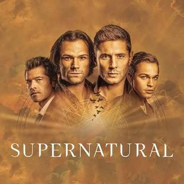

Supernatural is an American television series created by Eric Kripke. It was first broadcast on September 13, 2005, on The WB, and subsequently became part of successor network The CW's lineup. Starring Jared Padalecki as Sam Winchester and Jensen Ackles as Dean Winchester, the series follows the two brothers as they hunt demons, ghosts, monsters and other supernatural beings. Supernatural was in development for nearly ten years, as creator Kripke spent several years unsuccessfully pitching it. Along with Kripke, its executive producers included McG, Robert Singer, Phil Sgriccia, Sera Gamble, Jeremy Carver, John Shiban, Ben Edlund and Adam Glass. Former executive producer and director Kim Manners died during production of the fourth season.[5] Filming took place in Vancouver, British Columbia, Canada and in surrounding areas. The series was produced by Kripke Enterprises and McG's Wonderland Sound and Vision, in association with Warner Bros. Television.
This is not a movie it is a 15 Season Show